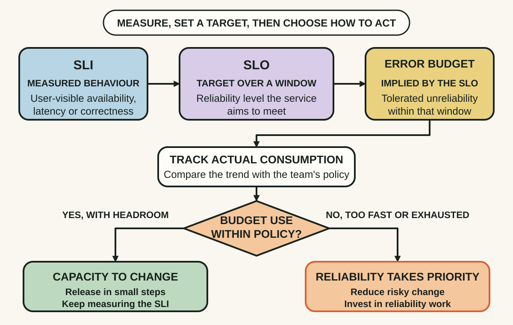
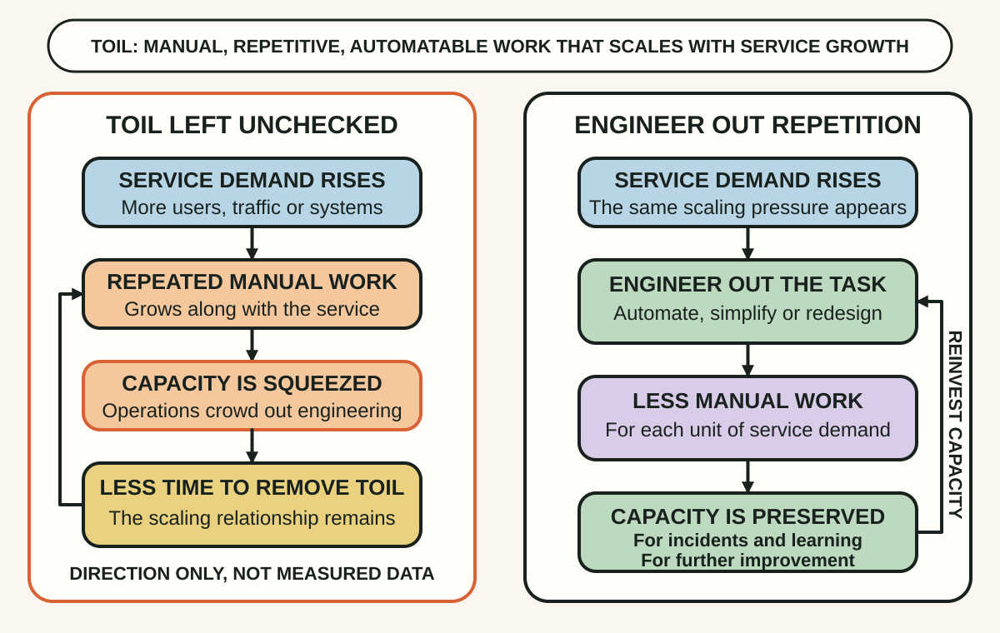
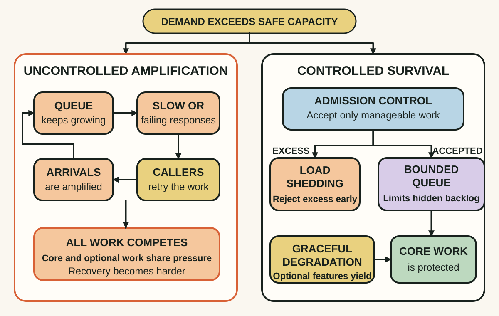

Daily lesson ·
Site Reliability Engineering: How Google Runs Production Systems
Run production systems with explicit trade-offs: measure reliability from the user's view, turn recurring operations into engineering and shed excess load before it becomes a cascade.
Idea 1
Turn reliability into a shared budget #
The idea
The book describes service level indicators, or SLIs, as carefully defined measures of service behaviour that matters to users, such as successful requests or latency. Service level objectives, or SLOs, set target values for those indicators so expected service can guide action rather than remain a vague promise.
The book argues that 100% reliability is usually impossible and can be undesirable when the extra effort blocks valuable change. For a proportion-based SLO, the permitted miss becomes an error budget: a shared input to release and reliability decisions. Budget remaining can support change; rapid consumption or exhaustion should trigger the response agreed in advance.

Why it matters
Product and operations can otherwise argue from incompatible absolutes: ship faster versus never fail. A visible budget makes the trade-off inspectable and revisable.
Apply it today
Choose one user action, such as submitting an order or loading a critical page. Define a good event in terms the user would recognise.
Choose a measurement window and a provisional objective. Write one action for healthy budget consumption and one for a budget burning faster than planned.
Caveat or failure mode
A precise SLO can optimise the wrong experience. Low-volume services, safety-critical actions and data-integrity failures may need different controls, and an error budget is not permission to ignore avoidable harm. Review the indicator, target and policy with product, engineering and affected users.
Idea 2
Make toil visible before it consumes the team #
The idea
The book gives toil a narrow meaning. It is operational work that is manual, repetitive, automatable, tactical, produces no enduring improvement and tends to grow with service demand. A novel incident, a necessary meeting or difficult engineering work is not automatically toil simply because it is unpleasant.
Google's SRE policy aims to keep total operational work at or below half of an SRE team's time so engineering can remove future work. The exact ratio is organisation-specific; the durable mechanism is to measure recurring hands-on effort, prioritise reductions and reinvest the released capacity in lasting improvements.

Why it matters
Toil can look productive because each ticket closes, yet growth multiplies the same work and crowds out the engineering needed to reduce it.
Apply it today
List one task repeated in the last month. Check it against the book's traits and estimate monthly hands-on time, not elapsed machine time.
Name the smallest durable change that would remove a step, reduce frequency or let the requester complete it safely. Decide what evidence would prove the work actually fell.
Caveat or failure mode
Automation can preserve a broken process, create silent failure or cost more than rare manual work. Keep human judgement where cases are novel or high consequence, add rollback and observability, and do not label every support duty as toil.
Idea 3
Shed work before overload becomes collapse #
The idea
The book shows how overload can become a positive feedback loop. Requests slow, in-flight work and queues consume more resources, health checks or instances fail, and the remaining capacity receives still more traffic. Immediate retries can add new demand exactly when the system is least able to serve it.
Rather than trying to complete every request, the authors recommend knowing capacity through realistic load tests, bounding queues and retries, rejecting work early when overloaded, and serving cheaper degraded results where that is acceptable. Preserving some useful work is often safer than letting the whole service cross its breaking point.

Why it matters
Unbounded helpfulness can make a partial capacity problem global. Explicit admission and degradation rules turn uncontrolled collapse into a smaller, observable service loss.
Apply it today
Choose one busy endpoint or dependency. Mark its core response, one optional expensive feature and the retry or queue that could multiply load.
Write one admission limit and one degraded response to test under load. Define who may be harmed by shedding and how that effect will be monitored.
Caveat or failure mode
Load shedding deliberately denies or reduces service and can distribute harm unfairly. Retries may be necessary for transient failures, especially when operations are idempotent, and degraded paths can rot when rarely exercised. Test recovery, fairness and fail-safe behaviour instead of assuming one threshold works everywhere.
Knowledge check · 6 questions
Learning check
Answer all 6, then check your answers. Your first result stays in this browser, and each explanation appears after you check. A 3-question review can appear on the homepage from tomorrow.
6 questions not yet answered.
Today's experiment · 10 minutes
Draft one reliability control card
- Choose one user action and define the event that counts as good service.
- Write a provisional measurement window, SLO and response if its error budget burns faster than planned.
- Name one repeated operational task and the smallest durable change that could reduce it.
- Draw one overload feedback step, then add one admission, retry or degradation guard that could break it.
- Mark the assumption on the card that needs the next real measurement or load test.
Observable result: You finish with one user-facing measure, one decision rule, one toil-reduction candidate and one overload guard ready to test.
Retrieval practice
Spaced recall
- From Working Effectively with Legacy Code: why can a characterization test expose change without proving the captured behaviour is correct?
- From Superforecasting: what reference class could help judge whether a proposed reliability target or incident rate is plausible?
Verification
Source notes
These links support the attributed claims and edition details; applications and extensions are labelled in the lesson.
- Google SRE book: publication and editor details
- Google Research: Site Reliability Engineering book record
- Google SRE book: Service Level Objectives
- Google SRE book: Embracing Risk and error budgets
- Google SRE book: Eliminating Toil
- Google SRE Workbook: Eliminating Toil in other organisations
- Google SRE book: Handling Overload
- Google SRE book: Addressing Cascading Failures
One-sentence takeaway